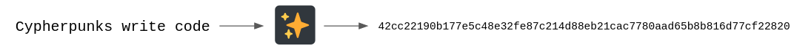
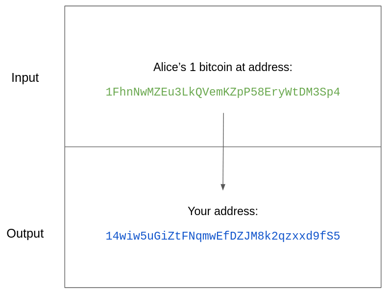
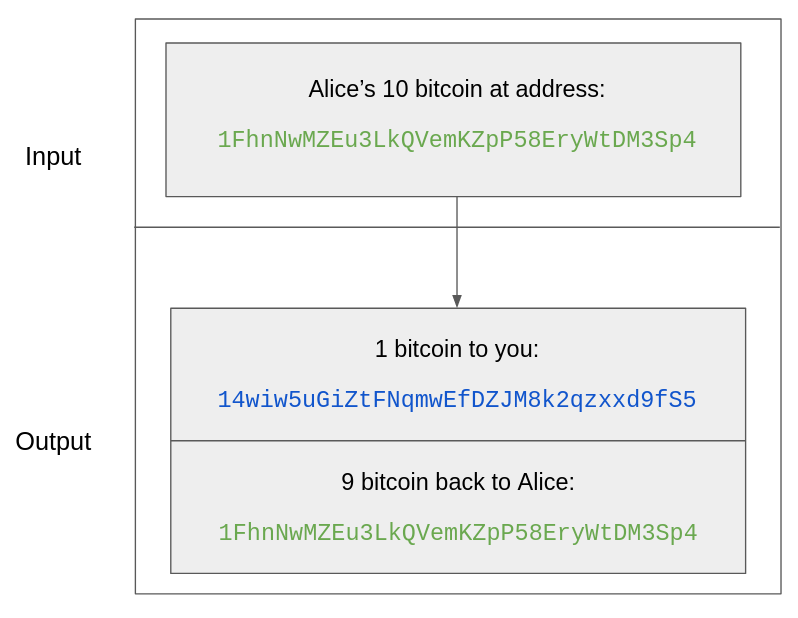
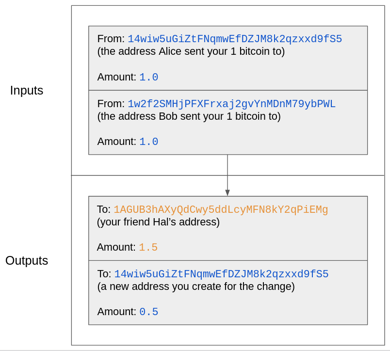

Bienvenido/a!
Este es un tutorial interactivo para principiantes que quieran aprender más acerca de la parte técnica de Bitcoin. Saber programación puede ayudar, pero no es un requisito.
Este tutorial te tomará sólo 20 minutos. Esta diseñado para realizarlo desde un ordenador de escritorio, por lo que por favor no intentes realizarlo desde tu teléfono móvil.
Try Bitcoin usa librerias populares de Javascript como bitcoinjs y bip-schnorr para explicar las diferentes partes del sistema. También introduce algunos comandos de Bitcoin Core CLI.
Algunos conceptos han sido simplificados por razones educativas, pero ¡no dejes que eso te desaliente! Los objetivos son que los participantes obtengan una mejor comprensión acerca de cómo funciona Bitcoin, y que así ganen confianza para estudiar los muchos libros, cursos y sitios web que profundizan aún más en Bitcoin.
A la derecha tenemos lo que se denomina una
Para comenzar, teclea
Lección 1
La mayoria de la gente está familiarizada con bitcoin como un tipo de moneda, pero ¿qué significa tener bitcoin?
Las unidades de bitcoin están asignadas a algo llamado
Para escenarios avanzados, bitcoin puede ser asignado a múltiples claves públicas. Los scripts hacen posible esto, pero eso no lo cubriremos aquí.
Por ahora, nos basta con que relacionemos la propiedad de bitcoin con una única clave pública.
Toda clave pública posee una correspondiente
Mientras que la clave pública puede ser compartida, la clave privada nunca debe ser revelada a nadie.
Comencemos generando un par de claves públicas y privadas para ver cómo se ven.
Escribe
Lección 2 - Firmas
Como podrás observar, tanto la clave pública como la clave privada pueden verse como una gran serie de letras y números. Estas están codificadas en formato hexadecimal o hex.
Verás que el formato hex se usa mucho. No tienes que saber necesariamente cómo funciona, basta con saber que es una forma para representar datos. ¡Para los humanos es mucho más fácil leer y reconocer el formato hex que un montón de unos y ceros!
Resulta que tú puedes hacer cosas muy interesantes con las claves públicas y privadas.
Una clave privada puede usarse para firmar datos y así crear una
La clave pública se puede usar luego para verificar que esa firma digital sea auténtica. ¿Fue realmente firmada por quien tú supones?
Esto significa que tú puedes firmar digitalmente unos datos, y cualquier persona que tenga tu clave pública puede verificar que la firma realmente ha sido hecha por ti.
La clave privada que acabas de generar ha sido guardada en una variable llamada privateKey. Ahora, cada vez que escribas privateKey, el programa sabrá que te estas refiriendo a esa larga serie de letras y números que representan tu clave privada.
Hagamos una firma digital firmando un mensaje. Escribe
Luego haz click en 'Enter' y la firma digital será devuelta.
Lección 3 - Verificación de firmas
Buen trabajo! Hemos creado una firma digital usando la clave privada. Ahora podemos usar la clave pública correspondiente para verificar la autenticidad de la firma.
De forma similar a la lección anterior, este tutorial ha guardado automáticamente los valores de publicKey,message y signature en variables con el mismo nombre.
Eso significa que todo lo que necesitas es escribir
Lección 4 - Hashing
Como era de esperar, la firma es válida!
Las firmas digitales son una de las tecnologías más importantes que utiliza Bitcoin, y son parte del corazón de su sistema. El acto de gastar bitcoin es en realidad el acto de firmar un mensaje—a—mensaje para transferir la propiedad.
Quizás hayas escuchado acerca de la importancia de proteger tus claves privadas. ¡Es exactamente por este motivo! Cualquier persona que acceda a ellas puede firmar mensajes en tu lugar, mensajes que transfieren la propiedad, o dicho de otro modo, que gastan tus bitcoin.
Otra aspecto esencial de Bitcoin es el
Hashing es como crear la huella digital de unos datos.
Todo comienza con una función, una función hash, que siempre retorna algo, en este caso retorna hashes de un cierto tamaño. Esto es cierto sin importar cuan grande o pequeño sea lo que ingresemos en esta función.
- Así como con las huellas digitales, los hashes son únicos. Dejando fuera ciertas circunstancias excepcionales, los hashes de dos cosas distintas nunca debieran ser iguales.
- Las funciones hash son como las calles de sentido único. No es posible hacer ingeniería inversa con un hash y obtener los datos que se usaron para obtenerlo.
- Los hashes son extremadamente confiables en el sentido de que éstos son determinísticos. Esto significa que puedes hashear un cierto dato una y otra vez y siempre vas a obtener el mismo resultado.
Ejemplo
He tomado la frase "Cypherpunks write code" y la he enviado mediante una función de hash, representada por esa reluciente caja negra. A la derecha, sale la serie de letras y números.

Probablemente esto no se ve muy excitante. El hash resultante es realidad más largo que la frase que fue ingresada, y ahora es completamente indescifrable. Pero ¿qué pasaría si hubieramos intentado aplicar la función hash a algo más largo? ¿Qué tal si aplicamos la función hash al primer párrafo del whitepaper de Bitcoin?

¡Mira eso! Ese largo párrafo ha sido reducido a una única serie de letras y números. Como era de esperar, es totalmente diferente respecto al hash asociado a "Cypherpunks write code", y sin embargo ambos hashes tienen el mismo largo.
Los hashes estan en todos lados en Bitcoin, en los IDs de las transacciones, en la creación de direcciones, en los scripts que definen condiciones de gasto particulares. A menudo, un pedazo de información será reducido a su hash para así poder ahorrar espacio.
Pongamos a prueba la propiedad determinística de las funciones de hash. Haz una copia mental del hash de la primera imagen, el hash asociado a "Cypherpunks write code".
Vamos a regenerar este hash nosotros mismos. Escribe
Lección 5 - Direcciones
¡Los hashes coinciden! Ahora que sabemos acerca del par de claves públicas y privadas, podemos comenzar a entender qué significa recibir bitcoin. Cuando quieres recibir un poco, tú entregas una
He aquí un ejemplo de una dirección: 2NEwkTybLpYyaRooBFMXAJDtchRdA8FMM4G
Si, lo sé, es otra serie aleatoria de letras y números... ¡pero es en realidad un hash!
Para ponerlo en términos simples, las direcciones son hashes de las claves públicas. ¿Recuerdas que antes aprendimos que la propiedad de bitcoin está correlacionada a las claves públicas? Así es como.
Para aplicaciones avanzadas, las direcciones pueden correspoder a múltiples claves públicas. Esto es posible gracias a algo llamado scripts, pero esto va más alla del alcance de este tutorial.
De la lección anterior sabemos que no puedes ir en reverso con los hashes. Si alguien te entrega una dirección, no puedes aplicar ingeniería inversa para obtener la clave pública que la generó.
¡Intenta generar una dirección por ti mismo! Escribe createAddress() con la clave pública que generaste previamente.
Lección 6 - Transacciones y Monedas
¡Ahí está la dirección!
En este punto debo indicar lo obvio. No envíes bitcoin a esta dirección. Nunca lo volverás a ver. En las palabras del creador anónimo de Bitcoin, Satoshi Nakamoto,
"Las monedas perdidas sólo hacen que las monedas de los demás valgan un poco más. Consideren que se trata de una donación para todos."
El movimiento de los bitcoin es registrado en las

Verás que la transacción está dividida en dos partes, el
Esto es similar a un libro contable de doble entrada, una práctica popular entre los comerciantes italianos del siglo XIV. Sus libros poseían dos columnas, una para los débitos y otra para los créditos.
La parte del input de la transacción es como la columna "débito" y la parte del output es como la columna "crédito".
En nuestro ejemplo hay sólo un input (el bitcoin de Alice) y un output (que ahora es tu bitcoin). ¿Qué pasaría si Alice tuviese 10 bitcoin? Si ella sólo quisiera darte uno, ella debería especificar que los restantes 9 le serán devueltos como cambio.
Así es como se ve esa transacción:

¡Si Alice no hubiera especificado que quería su cambio de vuelta, los restantes 9 bitcoin habrían ido a unas personas llamadas los mineros (más sobre eso adelante)!
La analogía del billete de dólar
Como ves, esta transacción tiene un input y dos outputs.
Los inputs y los outpus son como pequeños billetes de dólares. Estos no pueden ser subdivididos sin una transacción. Si Alice sólo tiene un billete de 10 dólares y quiere darte 1 dolar, ella no puede generar cambio por si misma. Ella no puede cortar 1/10 del billete y dártela a ti. Ella necesita crear algún tipo de transacción, quizás con una caja registradora, y usar el billete de 10 dólares como input.
Las cosas comienzan a diferenciarse del dinero tradicional (más conocido como fiat) cuando miramos las denominaciones. En Bitcoin, puedes tener un "billete" de cualquier denominación. Para esta analogía de hecho, Alice recibiría un billete de 9 dólares como cambio.
Inputs y outputs, El input de 10 bitcoin de Alice, su cambio de 9 bitcoin, y tu único bitcoin, usualmente son llamadas
Parece simple, pero recuerda que una "moneda" puede ser de cualquier denominación de bitcoin. No tiene que ser de 1 bitcoin. Puede ser de 21 bitcoin, o de fracciones como 0,1 bitcoin.
Vas a escuchar mucho el término "moneda" cuando la gente hable acerca de la privacidad.
El software "oficial" de Bitcoin, la implementación de referencia, es algo llamado Bitcoin Core. Bitcoin Core posee un montón de comandos que puedes usar para manejar tus bitcoin.
Si llevamos a cabo el ejemplo donde Alice nos envía un bitcoin, podemos usar el comando getbalance para ver que el dinero fue recibido.
Escribe
Lección 7 - Firma de transacciones
¡El balance es correcto! Considera ahora el escenario donde Bob también te envía 1 bitcoin (¡Qué suertudo eres!).
Por razones de privacidad, reutilizar direcciones no es aconsejado. Vamos a estar creando nuevas direcciones cuando sea necesario en los ejemplos siguientes.
Los detalles sobre cómo puedes generar un rango de nuevas direcciones está fuera del alcance de este tutorial. Puedes aprender más revisando BIP 32.
Puedes crear una nueva dirección para dársela a Bob, una que sea distinta de la que le diste a Alice.
Bob te envía un bitcoin, tal y como Alice lo hizo en la lección anterior. Ahora tienes 2 bitcoin.
Te gustaría comprar algo para tu amigo Hal por 1,5 bitcoin. Puedes hacerlo creando una transacción como esta:

- Los dos inputs son los bitcoin que recibiste de Alice y Bob.
- El primer output envía 1,5 bitcoin a Hal.
- El segundo output devuelve un cambio de 0,5 bitcoin para ti, a una nueva dirección.
Esta transacción está casi lista, ¡excepto por una cosa muy importante!
Anteriormente aprendimos que para poder gastar bitcoin, debes firmar un mensaje que autoriza la transferencia de los fondos. Así es como previenes que otros puedan gastar tus bitcoin. ¡El mensaje que firmas es en realidad la transacción!
En ejemplos anteriores tanto Alice como Bob tuvieron que firmar sus transacciones cuando te enviaron bitcoin.
Las transacciones poseen un área especial donde la persona que gasta añade su firma digital. Este campo se llama scriptSig, sin embargo también existen muchos casos especiales y reglas para ese campo que no cubriremos aquí. Por ahora, todo lo que necesitamos recordar es que:
1. Las firmas van en el campo scriptSig, y
2. Las transacciones están incompletas hasta que hayan sido firmadas.
Aquí abajo tenemos la data completa de nuestra transacción. Podemos ver que los dos campos scriptSig (uno para cada input) están vacíos. No hay firmas en ellos.
Si tratamos de transmitir esta transacción a la red Bitcoin así como está, será rechazada. La transacción necesita estar firmada.
Usaremos la función signTransaction() para esto. Es similar a la funcion signMessage() que usamos antes, pero los datos a ser firmados son diferentes. En lugar de aceptar cualquier mensaje arbitrario, esta funcion acepta que se ejecute una transacción. Luego crea el número apropiado de firmas, una por cada input.
La data completa de la transacción que vimos arriba ha sido almacenada en la variable transaction.
Escribe
Lección 8 - Transmitiendo una Transacción
¿Ves esos valores en los campos scriptSig? ¡Eso significa que la transacción ha sido firmada!
Ahora podemos proseguir y
Cada nodo de Bitcoin posee un conjunto de nodos semejantes con los que "conversa" regularmente. Cuando un nodo eschucha acerca de una nueva transacción, la comparte con sus semejantes.
¡Sólo toma unos pocos minutos a una transacción poder propagarse por toda la red de Bitcoin! Al momento de escribir este tutorial, existen más de 15.000 nodos de bitcoin en todo el mundo.
Estaremos usando el mismo software Bitcoin Core de antes para realizar la transmisión. El nombre del comando es sendrawtransaction y acepta la transacción en formato hexadecimal.
La conversión a hex ya está hecha para ti, ¡pero notarás que consiste en una serie muy larga de letras y números! Copia el siguiente comando y ejecútalo en la consola:
Lección 9 - Esperando las confirmaciones
¡Qué te parece! Luego de una transmisión exitosa, el cliente Bitcoin Core devuelve el ID de la transacción.
Dado que esto es sólo un ejercicio educativo, no podemos hacer mucho con el ID de la transacción, pero si fuese real podríamos buscarla en un explorador de bloques y ver todo tipo de información acerca de ella.
Ahora que el resto de la red conoce tu transacción, ya está casi finalizada, pero falta un paso más: ¡
Aquí es donde la parte "bloque" de la cadena de bloques de Bitcoin entra en juego. Después de que has transmitido una transacción, ésta va a un área especial de almacenamiento llamada la
Las transacciones que aún no han sido confirmadas se mantienen aquí, en espera de ser seleccionadas por un minero y puestas en un bloque.
La mempool no es un lugar único centralizado. Cada nodo posee su propia mempool. Luego de que una transacción es transmitida, pero antes de que haya sido minada, se mantiene en las mempools de todos los nodos que han tenido conocimiento de dicha transacción.
Aproximadanente cada diez minutos, un minador tomara un montón de transacciones no confirmadas desde su copia de la mempool y las incluirá, o "minará" en un bloque.
Comisiones
La probabilidad de que tu transacción sea parte del próximo bloque depende de las otras transacciones que hay en la mempool y de las comisiones que decidas pagar.
No hemos cubierto explícitamente las comisiones en este tutorial, pero hemos aprendido un poco acerca de éstas al mirar los outputs de cambio en una transacción. ¿Recuerdas el ejemplo donde Alice tenía 10 bitcoin y quería enviarte 1? Ella tenía que especificar que los restantes 9 bitcoin le fueran devueltos a ella, ¡que de otro modo habrían sido considerados para la comisión! Las comisiones van para el minero que construya el bloque.
Todo monto de bitcoin que sea "dejado fuera" en una transacción es considerado como la comisión de minado.
En el ejemplo previo si Alice decide devolverse sólo 8,5 bitcoin, entonces 0,5 bitcoin serían la comisión de minado de la transacción. La matemática cuadra: el input total de la transacción es 10 (los 10 bitcoin de Alice), y el output total es 9,5 bitcoin (1 para ti, y un cambio de 8,5 para Alice).
En los primeros días de Bitcoin, las transacciones no necesitaban pagar comisiones, pero así como Bitcoin va evolucionando, las comisiones van siendo cada vez más importantes.
Para nuestro ejercicio vamos a considerar el caso donde ha pasado algun tiempo y la transacción que transmitimos en la lección anterior ya ha sido minada. Es decir, que ya forma parte de un bloque de transacciones.
¿Cómo sabremos esto? Podríamos consultar periódicamente a un nodo de Bitcoin, o usar uno de los exploradores de bloques que mencionamos anteriormente para monitorear la cadena de bloques y ver cuándo una transacción particular ya ha sido minada.
Lo último que hay que hacer es revisar nuestro balance una vez más para asegurarnos que está correcto y que refleja los 1,5 bitcoin enviados a nuestro amigo Hal en la lección anterior.
Puedes hacer eso con el mismo commando
¡Eso es todo por ahora!
¡El balance es correcto! Partimos con 2 bitcoin (uno proveniente de Alice y uno proveniente de Bob) , enviamos 1,5 a nuestro amigo Hal, y el cambio devuelto fue de 0,5.
Gracias por realizar este pequeño tutorial. Si deseas realizarlo nuevamente, puedes escribir el comando
¡La diversión no tiene que terminar aquí! Ahora estás listo para aventurarte más al interior del agujero del conejo. He aquí algunos de mis recursos favoritos para continuar aprendiendo acerca de Bitcoin:
Material general
- Hello Bitcoin: Tu primera parada para los aspectos básicos. Aborda un amplio rango de contenidos desde empoderamiento económico y finanzas personales hasta consumo de energía y la red de pares de nodos de Bitcoin. Si quieres aprender más acerca de Bitcoin, pero no te atraen los temas tan técnicos, ¡Este es el lugar para ti!
- Bitcoin Money: A Tale of Bitville Discovering Good Money por Michael Caras: Este es un adorable libro para niños acerca de Bitcoin, ¡Pero yo lo recomiendo para todas las edades!
- Un seminario virtual de 6 semanas con Chaincode Labs: ¿Necesitas una motivación externa? ¿Quieres aprender con amigos? ¡Chaincode lo hace divertido y motivante! Estos seminarios son para todos los niveles, sólo necesitas poder comprometerte con 4-6 horas a la semana.
- Mastering Bitcoin por Andreas Antonopoulos [free digital version]: Este es el texto OG de Bitcoin y es un texto obligado para cualquiera que quiera constriur por sobre Bitcoin o contribuir en Bitcoin.
- Learning Bitcoin from the command line por BlockChain Commons: ¿Eres un hechizero del terminal de comandos? ¿Te hace bostezar la idea de usar la interfaz gráfica? ¿Te rehúsas a ir a ningún lugar sin tu portátil? BlockChain Commons está aquí para ti. ¡Aprende de Bitcoin a tu manera sin salir nunca de la comodidad de tu terminal!
- ¿Aún no has encontrado algo para ti? https://bitcoin.page posee todo el material que podrías desear acerca de cualquier faceta de Bitcoin que podrías imaginarte. Desde podcasts a videos, estadísticas, seguridad, arte y música, este sitio lo tiene todo. No he encontrado material de calidad que no esté en este listado, pero si encuentras que falta algo interesante, ¡Los PRs (pull requests) son siempre bienvenidos!
Desarollo de Bitcoin Core:
Para aquellos que les gusta beber desde la manguera de incendios siendo lanzada hacia el vacío, aquí es donde puedes ir para aprender más acerca de Bitcoin Core.
- El codigo base de Bitcoin Core en Github: ¡Comienza aquí y descarga una copia del código! El directorio
docses rico en información y notas de productividad de los desarrolladores. - Onboarding a Bitcoin Core por Amiti Uttarwar: Amiti es como la amiga del alma de Bitcoin Core que todos hubieramos deseado tener. Deja que te guíe por los pasos que puedes dar para convertirte en un contribuyente activo.
- Articles on how to compile Bitcoin Core, review pull requests, and where to find more resources por Jon Atack: Una de las mejores formas de contribuir es mediante la revisión de pull requests. Jon te acompaña por uno de los aspectos menos obvios de este proceso. ¡Guarda estas páginas en tu navegador porque vas a estar volviendo a ellas una y otra vez!
Ingresa los comandos aquí